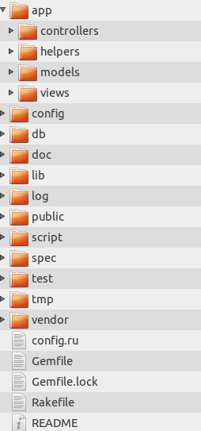

Your browser doesn't support the features required by impress.js, so you are presented with a simplified version of this presentation.
For the best experience please use the latest Chrome or Safari browser. Firefox 10 (to be released soon) will also handle it.
Rails Introduction
Web application framework based on Ruby
Less code compared to Other languages
DRY – “Don’t Repeat Yourself”
Convention Over Configuration
REST full architecture
MVC Architecture
M – Model
V- View
C – Controller
Seperates Views from Business logics
Keep code DRY
-
REST
REST (Representational State Transfer)
Access resource by URL
DELETE /record/1
Models
Business logics.
Represents the data and its relations.
All your code that relates to your data
Views
User interface to display data.
Providing data to the Request
Controller
”Glue” between Model and Views
Responsible for processing the requests from the web browser
Application structure

CreatingApplication
Create : rails new first_app
Run : rails server [ -p= port-number]
Stop : Ctl+c
Configuration for DB
Edit for Configuration database.yml
Default comes with Sqlite3
Scaffold
Creates Model ,Views and controller
Create scaffold: rails generate scaffold Person name:string age:integer
rake db:create
rake db:migrate
Routes
Config/routes.rb
All possible REST Full url to access server resources.
”resources” will create url for CURD operation
Routes
Config/routes.rb
All possible REST Full url to access server resources.
”resources” will create url for CURD operation
SPRITLE
Rails 3
- Introduction to Rails3
- MVC Architecture
- REST Architecture
- Application Structure
- Creating Application
- Configuration for DB
- Scaffold
- Routes